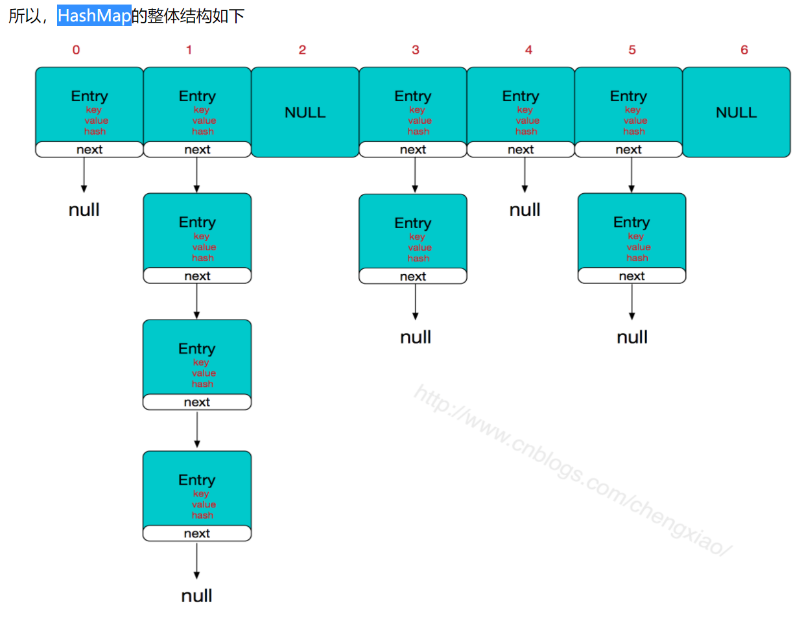
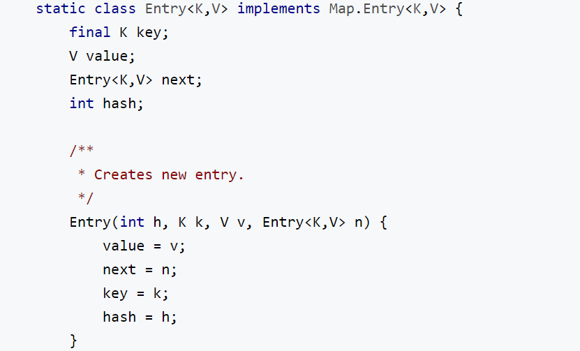

HashMap实现原理 
参考https://www.cnblogs.com/chengxiao/p/6059914.html
Entry内部结构为：

HashMap由数组+链表组成的，数组是HashMap的主体，链表则是主要为了解决哈希冲突而存在的，即链地址法。HashMap的主干是一个Entry数组。Entry是HashMap的基本组成单元，每一个Entry包含一个key-value键值对和一个hash值和一个指向下一个Entry的next指针。
如果定位到的数组位置不含链表（当前entry的next指向null）,那么对于查找，添加等操作很快，仅需一次寻址即
如果定位到的数组包含链表，对于添加操作，其时间复杂度依然为O(1)，操作是创建新节点，把该新节点插入到链表中的头部，该新节点的next指针指向原来的头结点 ，即需要简单改变引用链即可，而对于查找操作来讲，此时就需要遍历链表，然后通过key对象的equals方法逐一比对查找。
所以，性能考虑，HashMap中的链表出现越少，性能才会越好。
当发生哈希冲突并且size大于阈值的时候，需要进行数组扩容，扩容时，需要新建一个长度为之前数组2倍的新的数组，然后将当前的Entry数组中的元素全部传输过去，扩容后的新数组长度为之前的2倍，所以扩容相对来说是个耗资源的操作
如果key为null，就会插入到table[0]的位置也就是数组头。如果key=null，则hash值直接赋0
存key时，如果链中存在该key，则用传入的value覆盖掉旧的value，同时把旧的value返回：这就是为什么HashMap不能有两个相同的key的原因。
计算hash值之后，如何通过hash值均匀的存到数组里？当然是取模，但取模消耗大，因此HashMap用的&运算符（按位与操作）来实现的：hashCode & (length-1)。
这里就隐含了为什么数组长度length一定要是2的n次方。当length不是2的n次方的时候，length-1的二进制最后一位肯定是0，在&操作时，一个为0，无论另一个为1还是0，最终&操作结果都是0，这就造成了结果的二进制的最后一位都是0，这就导致了所有数据都存储在2的倍数位上，所以说，所以说当length = 2^n时，不同的hash值发生碰撞的概率比较小，这样就会使得数据在table数组中分布较均匀，查询速度也较快。
存储过程：
传入key和value，判断key是否为null，如果为null，则调用putForNullKey，以null作为key存储到哈希表中；
2. 然后计算key的hash值，根据hash值搜索在哈希表table中的索引位置，若当前索引位置不为null，则对该位置的Entry链表进行遍历，如果链中存在该key，则用传入的value覆盖掉旧的value，同时把旧的value返回，结束；
读取过程：
调用hash（key）求得key的hash值，然后调用indexFor（hash）求得hash值对应的table的索引位置，然后遍历索引位置的链表，如果存在key，则把key对应的Entry返回，否则返回null。
JDK1.8前后HashMap区别
在JDK1.8以前版本中，HashMap的实现是数组+链表，它的缺点是即使哈希函数选择的再好，也很难达到元素百分百均匀分布，而且当HashMap中有大量元素都存到同一个桶中时，这个桶会有一个很长的链表，此时遍历的时间复杂度就是O(n)，当然这是最糟糕的情况。
在JDK1.8及以后的版本中引入了红黑树结构，HashMap的实现就变成了数组+链表或数组+红黑树。添加元素时，若桶中链表个数超过8，链表会转换成红黑树；删除元素、扩容时，若桶中结构为红黑树并且树中元素个数较少时会进行修剪或直接还原成链表结构，以提高后续操作性能；遍历、查找时，由于使用红黑树结构，红黑树遍历的时间复杂度为 O(logn)，所以性能得到提升。
1 2 3 4 5 6 7 8 9 10 11 12 13 14 15 16 17 18 19 20 21 22 23 24 25 26 27 28 29 30 31 32 33 34 35 36 37 38 39 static class Node <K ,V > implements Map .Entry <K ,V > final int hash; final K key; V value; Node<K,V> next; Node(int hash, K key, V value, Node<K,V> next) { this .hash = hash; this .key = key; this .value = value; this .next = next; } public final K getKey () return key; } public final V getValue () return value; } public final String toString () return key + "=" + value; } public final int hashCode () return Objects.hashCode(key) ^ Objects.hashCode(value); } public final V setValue (V newValue) V oldValue = value; value = newValue; return oldValue; } public final boolean equals (Object o) if (o == this ) return true ; if (o instanceof Map.Entry) { Map.Entry<?,?> e = (Map.Entry<?,?>)o; if (Objects.equals(key, e.getKey()) && Objects.equals(value, e.getValue())) return true ; } return false ; } }
HashMap扩容 HashMap扩容可以分为三种情况：
使用默认构造方法初始化HashMap。HashMap在一开始初始化的时候会返回一个空的table，并且thershold为0。因此第一次扩容的容量为默认值DEFAULT_INITIAL_CAPACITY也就是16。同时threshold = DEFAULT_INITIAL_CAPACITY * DEFAULT_LOAD_FACTOR = 12。
指定初始容量的构造方法初始化HashMap。初始容量会等于threshold，接着threshold = 当前的容量（threshold） * DEFAULT_LOAD_FACTOR。
HashMap不是第一次扩容。如果HashMap已经扩容过的话，那么每次table的容量以及threshold量为原有的两倍。
HashMap是先插入数据再进行扩容的，但是如果是刚刚初始化容器的时候是先扩容再插入数据。
1 2 3 4 5 6 7 8 9 10 11 12 13 14 15 16 17 18 19 20 21 22 23 24 25 26 27 28 29 30 31 32 33 34 35 36 37 38 39 40 41 42 43 44 45 46 47 48 49 50 51 52 53 54 55 56 57 58 59 60 61 62 63 64 65 66 67 68 69 70 71 72 73 final Node<K,V>[] resize() { Node<K,V>[] oldTab = table; int oldCap = (oldTab == null) ? 0 : oldTab.length; int oldThr = threshold; int newCap, newThr = 0; if (oldCap > 0) { if (oldCap >= MAXIMUM_CAPACITY) { threshold = Integer.MAX_VALUE; return oldTab; } else if ((newCap = oldCap << 1) < MAXIMUM_CAPACITY && oldCap >= DEFAULT_INITIAL_CAPACITY) newThr = oldThr << 1; // double threshold } else if (oldThr > 0) // initial capacity was placed in threshold newCap = oldThr; else { // zero initial threshold signifies using defaults newCap = DEFAULT_INITIAL_CAPACITY; newThr = (int)(DEFAULT_LOAD_FACTOR * DEFAULT_INITIAL_CAPACITY); } if (newThr == 0) { float ft = (float)newCap * loadFactor; newThr = (newCap < MAXIMUM_CAPACITY && ft < (float)MAXIMUM_CAPACITY ? (int)ft : Integer.MAX_VALUE); } threshold = newThr; @SuppressWarnings({"rawtypes","unchecked"}) Node<K,V>[] newTab = (Node<K,V>[])new Node[newCap]; table = newTab; if (oldTab != null) { for (int j = 0; j < oldCap; ++j) { Node<K,V> e; if ((e = oldTab[j]) != null) { oldTab[j] = null; if (e.next == null) newTab[e.hash & (newCap - 1)] = e; else if (e instanceof TreeNode) ((TreeNode<K,V>)e).split(this, newTab, j, oldCap); else { // preserve order Node<K,V> loHead = null, loTail = null; Node<K,V> hiHead = null, hiTail = null; Node<K,V> next; do { next = e.next; if ((e.hash & oldCap) == 0) { if (loTail == null) loHead = e; else loTail.next = e; loTail = e; } else { if (hiTail == null) hiHead = e; else hiTail.next = e; hiTail = e; } } while ((e = next) != null); if (loTail != null) { loTail.next = null; newTab[j] = loHead; } if (hiTail != null) { hiTail.next = null; newTab[j + oldCap] = hiHead; } } } } } return newTab; }
参考https://blog.csdn.net/pange1991/article/details/82347284
HashMap多线程问题 HashMap在多线程情况下出现死循环主要是在1.7情况下面，存在多线程时候应该使用ConcurrentHashMap。
1 2 3 4 5 6 7 8 9 10 11 12 13 void resize(int newCapacity) { Entry[] oldTable = table; int oldCapacity = oldTable.length; if (oldCapacity == MAXIMUM_CAPACITY) { threshold = Integer.MAX_VALUE; return; } Entry[] newTable = new Entry[newCapacity]; transfer(newTable, initHashSeedAsNeeded(newCapacity)); table = newTable; threshold = (int)Math.min(newCapacity * loadFactor, MAXIMUM_CAPACITY + 1); }
1 2 3 4 5 6 7 8 9 10 11 12 13 14 15 16 17 18 19 20 21 22 void transfer(Entry[] newTable, boolean rehash) { int newCapacity = newTable.length; for (Entry<K,V> e : table) { while(null != e) { Entry<K,V> next = e.next; //循环取出原数组中每一个链表，e本身也是一个链表的节点，同时包含下一个节点的连接, //此处e表示第一个节点，next表示链表的下一个节点 if (rehash) { e.hash = null == e.key ? 0 : hash(e.key); } int i = indexFor(e.hash, newCapacity); //计算在新数组中的存储位置 e.next = newTable[i]; //将原数组链表的第一个元素的next指向新数组，若新数组中已经存在元素， //则这个元素为第一个元素，next属性为原节点地址 newTable[i] = e; //将新数组的头节点指向e，此时e(原数组中的第一个元素)已经成功的转移到了新数据中 e = next; //继续处理原数组中剩下的节点 } } }
参考https://www.jianshu.com/p/1ff9f3dee207
HashMap和HashTable
Hashtable 中的方法是同步的，而HashMap中的方法在缺省情况下是非同步的。
Hashtable中，key和value都不允许出现null值。在HashMap中，null可以作为键，这样的键只有一个；可以有一个或多个键所对应的值为null。
并发性不如ConcurrentHashMap，因为ConcurrentHashMap引入了分段锁。Hashtable不建议在新代码中使用，不需要线程安全的场合可以用HashMap替换，需要线程安全的场合可以用ConcurrentHashMap替换。
HashTable和synchronizedMap和ConcurrentHashMap HashTable、synchronizedMap效率低下
现在基本不用HashTable。HashTable容器使用synchronized来保证线程安全，但是锁的是整个hash表，当一个线程使用 put 方法时，另一个线程不但不可以使用 put 方法，连 get 方法都不可以。
synchronizedMap比HashTable强一分钱，synchronizedMap提供一个不同步的基类和一个同步的包装。允许需要同步的用户可以拥有同步，而不需要同步的用户则不必为同步付出代价，get方法与HashTable一样锁住整个hash表，区别是get()和put()之类的简单操作可以在不需要额外同步的情况下安全地完成。但多个操作组成的操作序列却可能导致数据争用，总之就是不好用。
ConcurrentHashMap效率高，因为用了分段锁（JDK8之前），16个
HashTable容器在竞争激烈的并发环境下表现出效率低下的原因是所有访问HashTable的线程都必须竞争同一把锁
那假如容器里有多把锁，每一把锁用于锁容器其中一部分数据，那么当多线程访问容器里不同数据段的数据时，线程间就不会存在锁竞争，从而可以有效的提高并发访问效率
这就是 ConcurrentHashMap所使用的锁分段技术，首先将数据分成一段一段的存储，默认分成16个段，然后给每一段数据配一把锁，当一个线程占用锁访问其中一个段数据的时候，其他段的数据也能被其他线程访问。
上面说到的16个线程指的是写线程，而读操作大部分时候都不需要用到锁。只有在size等操作时才需要锁住整个hash表。
ConcurrentHashMap JDK1.8 基本结构：Node<K,V>数组+链表（红黑树）的结构。
而对于锁的粒度，调整为对每个数组元素加锁（Node），即没有分段锁了，而是Node锁，粒度更小。
使用CAS操作来确保Node的一些操作的原子性，这种方式代替了锁。
ConcurrentHashMap在线程安全的基础上提供了更好的写并发能力，但同时降低了读一致性。ConcurrentHashMap的get操作上面并没有加锁。所以在多线程操作的过程中，并不能完全的保证一致性。这里和1.7当中类似，是弱一致性的体现。
代码中使用synchronized而不是ReentrantLock，说明JDK8中synchronized有了足够的优化。
然后是定位节点的hash算法被简化了，这样带来的弊端是Hash冲突会加剧。
因此在链表节点数量大于8时，会将链表转化为红黑树进行存储。这样一来，查询的时间复杂度就会由原先的O(n)变为O(logN)。
ConcurrentHashMap的设计与实现非常精巧，大量的利用了volatile，final，CAS等lock-free技术来减少锁竞争对于性能的影响。
HashEntry中的value以及next都被volatile修饰，这样在多线程读写过程中能够保持它们的可见性。
HashMap读取与写入 1 2 3 4 public V get(Object key) { Node<K,V> e; return (e = getNode(hash(key), key)) == null ? null : e.value; }
1 2 3 4 5 6 7 8 9 10 11 12 13 14 15 16 17 18 19 final Node<K,V> getNode(int hash, Object key) { Node<K,V>[] tab; Node<K,V> first, e; int n; K k; if ((tab = table) != null && (n = tab.length) > 0 && (first = tab[(n - 1) & hash]) != null) { if (first.hash == hash && // always check first node ((k = first.key) == key || (key != null && key.equals(k)))) return first; if ((e = first.next) != null) { if (first instanceof TreeNode) return ((TreeNode<K,V>)first).getTreeNode(hash, key); do { if (e.hash == hash && ((k = e.key) == key || (key != null && key.equals(k)))) return e; } while ((e = e.next) != null); } } return null; }
1 2 3 public V put (K key, V value) return putVal(hash(key), key, value, false , true ); }
1 2 3 4 5 6 7 8 9 10 11 12 13 14 15 16 17 18 19 20 21 22 23 24 25 26 27 28 29 30 31 32 33 34 35 36 37 38 39 40 41 42 final V putVal (int hash, K key, V value, boolean onlyIfAbsent, boolean evict) Node<K,V>[] tab; Node<K,V> p; int n, i; if ((tab = table) == null || (n = tab.length) == 0 ) n = (tab = resize()).length; if ((p = tab[i = (n - 1 ) & hash]) == null ) tab[i] = newNode(hash, key, value, null ); else { Node<K,V> e; K k; if (p.hash == hash && ((k = p.key) == key || (key != null && key.equals(k)))) e = p; else if (p instanceof TreeNode) e = ((TreeNode<K,V>)p).putTreeVal(this , tab, hash, key, value); else { for (int binCount = 0 ; ; ++binCount) { if ((e = p.next) == null ) { p.next = newNode(hash, key, value, null ); if (binCount >= TREEIFY_THRESHOLD - 1 ) treeifyBin(tab, hash); break ; } if (e.hash == hash && ((k = e.key) == key || (key != null && key.equals(k)))) break ; p = e; } } if (e != null ) { V oldValue = e.value; if (!onlyIfAbsent || oldValue == null ) e.value = value; afterNodeAccess(e); return oldValue; } } ++modCount; if (++size > threshold) resize(); afterNodeInsertion(evict); return null ; }
↑
原文作者: Yang Peng
原文链接: http://ylovex.cn/2019/05/02/java-map笔记/
版权声明: 转载请注明出处(必须保留作者署名及链接)